{kind=link}

|
Introduction |
Method 1: Brush/Pencil | Method
2: Spot Healing Brush | Method 3: Healing Brush | Method
4:
Patch | Method 5: Content-Aware Move |
| Method 10: Combining Tools |
Now that you have experience with all of the removal techniques, it's time for some bad news. While making simple changes like removing a small person from a large image can be accomplished easily with just one of the tools, removing larger, more complicated objects is often more difficult and requires the use of multiple tools. Have a look at the image below...
This is the Angkor Wat temple in Cambodia. You can click the above image to get the full-sized version.
Specifically, pay attention to the five areas of construction indicated below...
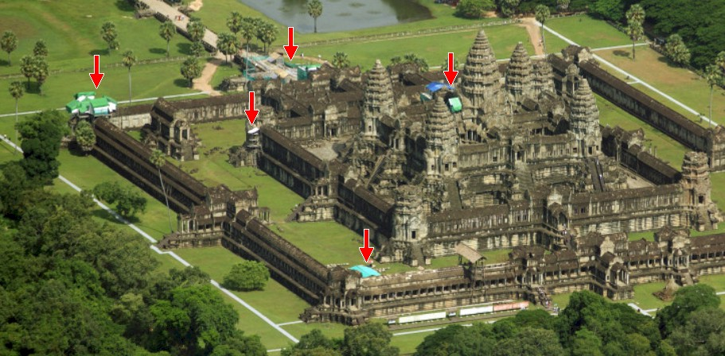
If we want to remove the five areas of construction and make it look like this...
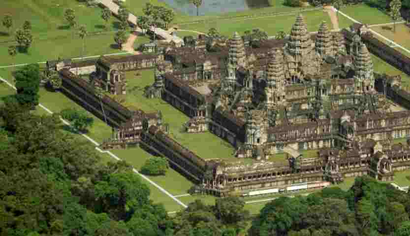
We have to combine the use of several tools.
For example, to replace these structures...
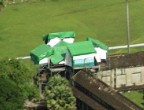
I used the Remove Tool and got this result...
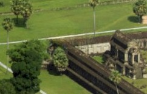
Photoshop was able to identify that there was a building, grass, and a white line and correctly repaired the area. Because each corner of the outer wall has a building of some kind on top of it, I then used the
Content-Aware Move Tool to copy the part of the building circled below over to where the arrow is pointing...
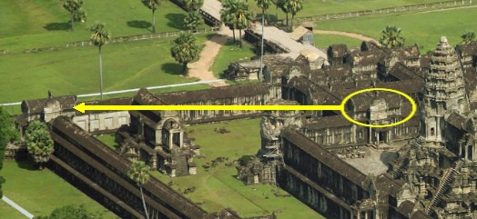
I used the Clone Tool with a hard edge brush to clone the grass and make the edge along the top of the building.
For this area...
I used the Spot Healing Brush and the Healing Brush to remove the fences and tarps. I used the roof cap circled below as source material and copied it to where the arrow is pointing
...
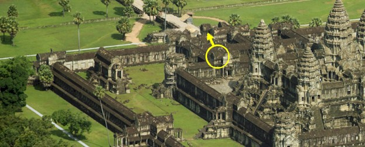
I used the Close Tool to create a small area of lighter roof material so that it was not obvious where the roof cap came from.
For this area...
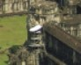
I simply used the Clone Stamp Tool to extend the column up.
For this area...
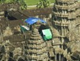
I used the Remove Tool to get rid of the tarps, and then the Clone Stamp Tool to put the round cap back on the column...
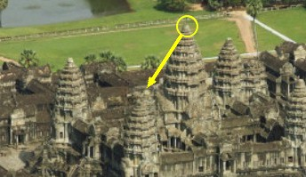
For this area...
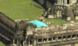
I first used the Patch Tool to remove the people indicated below...
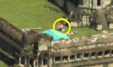
I then used the Remove Tool to get rid of the green tarp.
For the people scattered throughout the image, I used a
variety of other methods to remove them (mostly the Clone Stamp Tool because it is the quickest). As you can see, being familiar with the various removal techniques in Photoshop has served us well on this image. The point here is to recognize that while one tool will work for small jobs, larger jobs often require the use of multiple tools.Let's return to our Colosseum image. We have made multiple changes at this point, so let's finish removing all of the people and objects around the building. Your task is to use whatever technique works best to remove the rest of the people, cars, kiosks, lamp posts, barricades, and anything else until your image looks like this...
Don't worry about your image being perfect. I completely understand that many of you are using most of these tools for the first time and are not an expert with them. Just do the best you can and try to end up with something similar to what you see above. It is up to you to decide which of the methods we covered will work best (and be most efficient!) on each individual object to remove it.
By the way, please do not try to save the above image and pass it off as your work. The above image is a different size and resolution, so I will know if you try claim it as your own. Don't cheat - I WILL KNOW.
REMOVING OBJECTS PRACTICE
Before I turn you loose and have you remove people and objects from your own, individual image, let's take a moment to practice the various removal tools just a bit. Don't worry, this will not be a difficult, time consuming process - we are going to keep things quick and easy. To do this, you will save the image we used in this step and remove the construction and people just as I described in this step. Follow the directions below:
Let me give you one more quick word of warning - DO NOT try to save the clean image above (the third picture on this step) and pass it off as your work. Note that the clean image is a different size and resolution than the image that should be using to complete this practice. Don't cheat - I WILL KNOW.
Congratulations, you finished the tutorial! You are now a complete and total expert at removing objects from images. Your next task is to complete the Removing Objects Exercise, where you will select an aerial photo and remove the people and objects in it to make the location look abandoned. Click the link below to go to the Exercise: